Da luta contra o Eixo na Segunda Guerra Mundial a viagens pelo espaço sideral, o Pernalonga já viu de tudo. Conheça a história de cada um dos Looney Tunes.
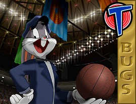
No Brasil: Pernalonga
O astro dos Looney Tunes já foi chamado de "clássico", "uma instituição americana" e "um dos nossos heróis nacionais", sem falar em "coelho maluco". Ganhou o Oscar pelo curta Knighty-Knight Bugs (1958) e estrelou mais de 175 desenhos. Em Space Jam, ganha pela primeira vez o papel principal num longa original da Warner, ao lado de Michael Jordan.
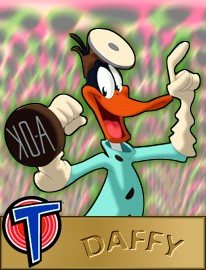
No Brasil: Patolino
Um dos únicos grandes astros da Warner que surgiram antes do Pernalonga. Estreou em Porky's Duck Hunt, de Tex Avery, como um pato que, em vez de fugir do caçador, saía pulando feito maluco pelo lago: "Hoo-hoo! Hoo-hoo!".
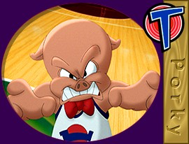
No Brasil: Gaguinho
O primeiro dos astros da Warner. Virou estrela em I Haven't Got a Hat (1935), de Friz Freleng, que se inspirou em dois colegas de infância apelidados de Piggy e Porky. "Estávamos procurando um personagem novo, e o público nos disse que era o Porky."
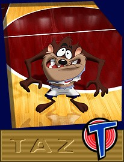
O Diabo da Tasmânia
O mais novo e, para muitos, o mais empolgante dos personagens clássicos. Estreou em Devil May Hare (1954) e quase foi aposentado pelo chefe do estúdio, até que o próprio Jack Warner sentiu falta dele. Quando Mel Blanc perguntou como era a voz de um diabo da tasmânia, ouviu: "Ninguém nunca ouviu um".
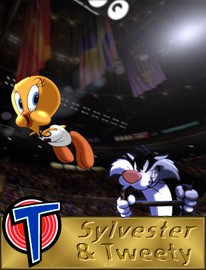
No Brasil: Frajola e Piu-Piu
A dupla estreou em Tweetie Pie (1947), de Friz Freleng, que deu à Warner o seu primeiro Oscar de animação. Em 42 aventuras, o Piu-Piu provou que não hesitava em usar alfinetes, bigornas, dinamite ou canhões para se livrar do "gatinho".
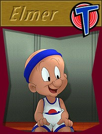
No Brasil: Hortelino Troca-Letras
O caçador que apontou a espingarda para o Pernalonga em A Wild Hare (1940) e foi o primeiro a ouvir o famoso "O que é que há, velhinho?". Estar no lugar certo, na hora certa, fez dele o eterno trapalhão e parceiro de piadas do coelho.
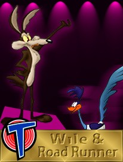
No Brasil: Coiote e Papa-Léguas
Criados no fim dos anos 1940 por Michael Maltese e Chuck Jones como uma paródia das perseguições dos desenhos, estrearam em Fast and Furry-ous (1949). O Coiote quer provar que é possível pegar o Papa-Léguas e, como planos simples não funcionam, inventa planos cada vez mais complicados.
Textos de Joe Adamson, historiador de cinema, autor de Bugs Bunny: Fifty Years and Only One
Grey Hare e Tex Avery: King of Cartoons.
Quando não estão atuando, esses caras se dedicam a um esporte chamado "basquete".
(Dados da temporada 1995-96, como no site original.)
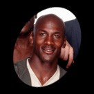
- Time: Chicago Bulls
- Posição: Armador
- Altura: 1,98 m
- Nascimento: 17/02/1963, Brooklyn, Nova York
- Universidade: North Carolina
- Média na carreira: 32,0 pontos por jogo
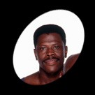
- Time: New York Knicks
- Posição: Pivô
- Altura: 2,13 m
- Nascimento: 05/08/1962, Kingston, Jamaica
- Universidade: Georgetown
- Média na carreira: 23,7 pontos por jogo
- Time: Houston Rockets
- Posição: Ala
- Altura: 1,98 m
- Nascimento: 20/02/1963, Leeds, Alabama
- Universidade: Auburn
- Média na carreira: 23,3 pontos por jogo
- Time: New York Knicks
- Posição: Ala
- Altura: 2,01 m
- Nascimento: 14/03/1969, Tyler, Texas
- Universidade: UNLV (Nevada-Las Vegas)
- Média na carreira: 19,6 pontos por jogo
- Time: Charlotte Hornets
- Posição: Armador
- Altura: 1,60 m
- Nascimento: 09/01/1965, Baltimore, Maryland
- Universidade: Wake Forest
- Média na carreira: 8,4 pontos por jogo
- Time: New Jersey Nets
- Posição: Pivô
- Altura: 2,29 m
- Nascimento: 22/03/1972, Landstuhl, Alemanha
- Universidade: Brigham Young
- Média na carreira: 10,6 pontos por jogo
Não, o nome verdadeiro dele não é Newman.
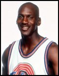
Michael Jordan
Ele mesmo
Estreia no cinema com Space Jam. Considerado o maior jogador de basquete da história: ouro olímpico em 1984 e 1992, eleito quatro vezes o melhor jogador (MVP) da NBA e MVP das finais em todos os títulos do Bulls (1991 a 1993 e 1996). Em 1993, largou o basquete para jogar beisebol, mas voltou ao Bulls e foi campeão de novo em 1995-96.
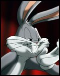
Pernalonga (Bugs Bunny)
Ele mesmo
Ganhou o Oscar pelo curta Knighty-Knight Bugs (1958) e foi indicado outras três vezes. Estrela de mais de 175 desenhos, é a prova de que, para sobreviver no mundo de hoje, é preciso ser esperto e manter a calma. O superastro dos Looney Tunes é o par perfeito para o superastro Michael Jordan.
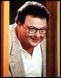
Wayne Knight
Stan Podolak
Famoso por Jurassic Park e pelo papel de Newman, o carteiro vizinho de Jerry na série Seinfeld. No cinema, também esteve em Dirty Dancing, JFK e Instinto Selvagem.
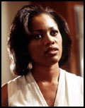
Theresa Randle
Juanita Jordan
Atuou em Bad Boys, Um Tira da Pesada III e em três filmes de Spike Lee: Febre da Selva, Malcolm X e Garota 6. Na TV, participou de A Different World.
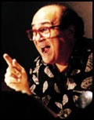
Danny DeVito
Voz de Swackhammer
Ator, diretor e produtor. Ficou famoso na série Taxi e atuou em Um Estranho no Ninho, Irmãos Gêmeos e Matilda, que também dirigiu. É sócio da produtora Jersey Films, de Pulp Fiction.
De nanicos insignificantes a Monstars aterrorizantes num piscar de olhos. Não são o tipo de gente que você gostaria de encontrar na quadra, nem em lugar nenhum.
Nerdlucks
As descrições são dos próprios animadores, tiradas dos esboços de produção.
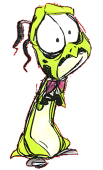
NULL
"nervoso, preocupado"
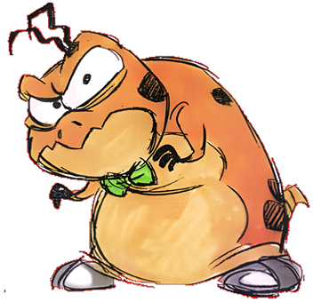
ZILCH
"curvado, peito para dentro"
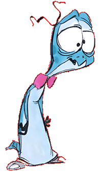
VOID
"desengonçado, postura boba"
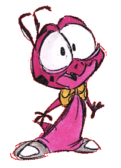
NADA
"esperto e animado"
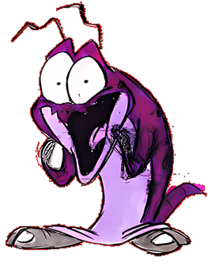
BUPKUS
"risadinha incontrolável; movimentos rápidos e bruscos"
Monstars
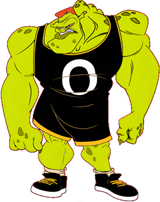
NULL
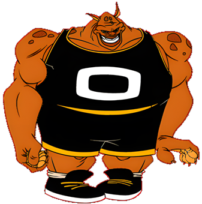
ZILCH
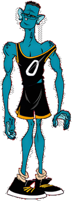
VOID
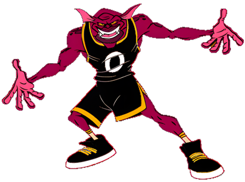
NADA
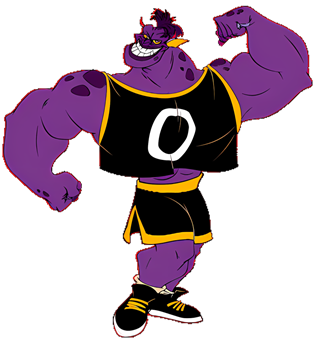